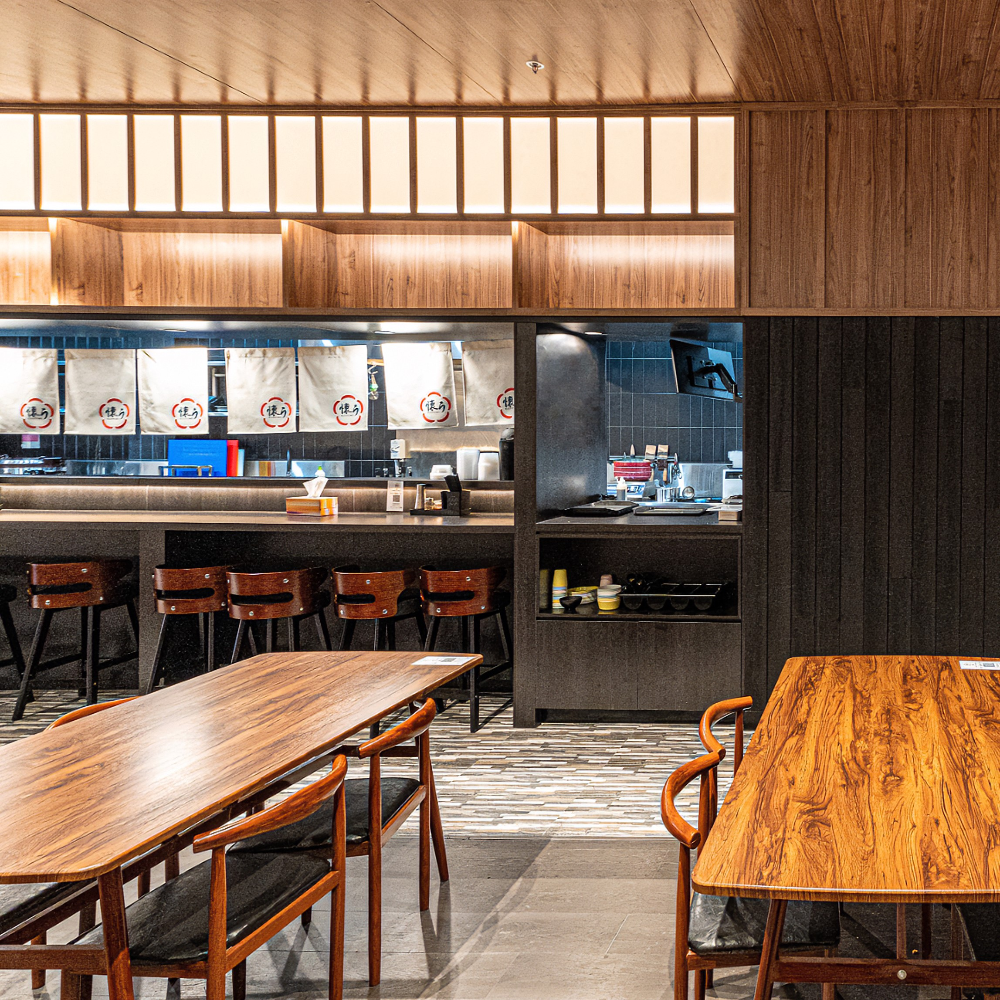
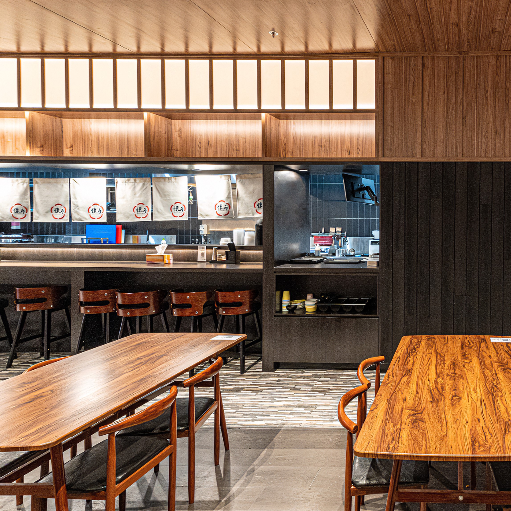

About Us
We specialize in ramen with ‘Tonkotsu soup’, broth of pork bone. Ramen is one of the representative dishes in Japan following Tempura and Sushi. Among the variety of flavours for soup, such as Shoyu (soy sauce), Shio (salt), Miso, Tonkotsu is the most popular. That is why Natumi Ramen draws a lot of people who are after authentic Tonkotsu ramen on the Queensland. Using specially selected bones of Australian pork, we have our own secret recipe for the soup
-it is simmered for long hours, carefully skimming the scum to draw out the extract flavour. The soup features a mild taste without any associated smell. Free from chemical seasonings and preservatives, it leaves a clear aftertaste. On top of that, the soup is rich in collagen. It is said that taking vitamin C from green and yellow vegetables and fruits after meals activates the production of collagen, so Tonkotsu ramen is also recommended for women who are concerned with losing firmness and moisture in their skin.
We also use carefully selected Australian pork back ribs for ‘Char siu’ (seasoned pork slices) which is the must-have topping for ramen. Being cooked for hours with a generous amount of soy sauce and mirin (sweet cooking sake), it melts in your mouth. While still having the soup, you can order another helping of noodles – it is called ‘Kaedama’. We are offering a special free Kaedama service from time to time, which is also popular for our customers.


 
